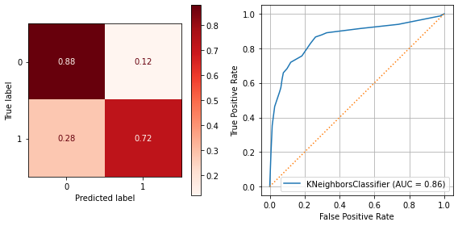
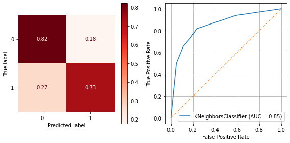
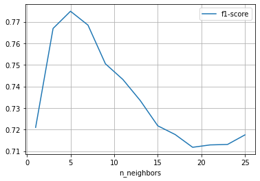
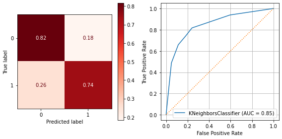
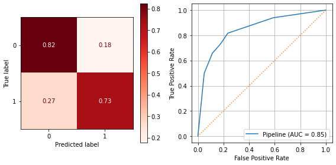

Topic 27: K-Nearest Neighbors
+Topic 32: Pipelines#
onl01-dtsc-ft-022221 05/10/21
Learning Objectives:#
Understand the different distance metrics
Understand how K-Nearest Neighbors works
Review the KNN with Scikit Learn Lab together
Introduce using
Pipelines for Preprocessing and ModelingAdd Pipelines to the Knn with Scikit learn lab.
[If there’s time:] adding the
ColumnTransformerfor all preprocessing.
Questions#
Distance Metrics#
K-nearest neighbors is a distance-based model.
There are multiple ways of calculating distance.
Manhattan Distance#

“The right side of the equals sign means “calculate the absolute number of units you move in each distinct dimension, and then sum them all up”.”
“The \(\Sigma\) just means “the cumulative sum of each step”. In a given step, you take a dimension, and then look at the corresponding values for that dimension on point X and point Y.
You then compute the absolute value of the difference between them by subtracting Y’s value for that dimension from X’s value for that dimension, and then add it to our total.”
Euclidian#

The equation at the heart of this one is probably familiar to you: \(a^2 + b^2 = c^2\), or the Pythagorean theorem
Minkowski#
A generalized distance metric across a Normed Vector Space.
“A Normed Vector Space”= a collection of space where each point has been processed by a function (any function, as long it meets two criteria:)
1. the zero vector (just a vector filled with zeros) will output a length of 0, and
2. every other vector must have a positive length
Both the Manhattan and Euclidean distances are actually special cases of Minkowski distance.
Manhattan Distance:
c = 1
Euclidean Distance:
c = 2
K Nearest Neighbors#
Supervised Learning
Classification OR regression.
Predicting the Class for the Red Dot#

Get the classes of the K closest points to use as predictions#
Each neighbor “votes” on which class the unknown point belongs to.

How KNN “Voting” works#

Finding the Best K Using Elbow Plots#

Activity Part 1: Walk through KNN with scikit-learn - Lab#
Let’s walk through the solution code before updating it with our own code.
Introduction#
In this lab, you’ll learn how to use scikit-learn’s implementation of a KNN classifier on the classic Titanic dataset from Kaggle!
Objectives#
In this lab you will:
Conduct a parameter search to find the optimal value for K
Use a KNN classifier to generate predictions on a real-world dataset
Evaluate the performance of a KNN model
Getting Started#
Start by importing the dataset, stored in the titanic.csv file, and previewing it.
# Your code here
# Import pandas and set the standard alias
import matplotlib.pyplot as plt
import seaborn as sns
import numpy as np
import pandas as pd
# Import the data from 'titanic.csv' and store it in a pandas DataFrame
raw_df = pd.read_csv('titanic.csv')
# Print the head of the DataFrame to ensure everything loaded correctly
raw_df.head()
| PassengerId | Survived | Pclass | Name | Sex | Age | SibSp | Parch | Ticket | Fare | Cabin | Embarked | |
|---|---|---|---|---|---|---|---|---|---|---|---|---|
| 0 | 1 | 0 | 3 | Braund, Mr. Owen Harris | male | 22.0 | 1 | 0 | A/5 21171 | 7.2500 | NaN | S |
| 1 | 2 | 1 | 1 | Cumings, Mrs. John Bradley (Florence Briggs Th... | female | 38.0 | 1 | 0 | PC 17599 | 71.2833 | C85 | C |
| 2 | 3 | 1 | 3 | Heikkinen, Miss. Laina | female | 26.0 | 0 | 0 | STON/O2. 3101282 | 7.9250 | NaN | S |
| 3 | 4 | 1 | 1 | Futrelle, Mrs. Jacques Heath (Lily May Peel) | female | 35.0 | 1 | 0 | 113803 | 53.1000 | C123 | S |
| 4 | 5 | 0 | 3 | Allen, Mr. William Henry | male | 35.0 | 0 | 0 | 373450 | 8.0500 | NaN | S |
Great! Next, you’ll perform some preprocessing steps such as removing unnecessary columns and normalizing features.
Preprocessing the data#
Preprocessing is an essential component in any data science pipeline. It’s not always the most glamorous task as might be an engaging data visual or impressive neural network, but cleaning and normalizing raw datasets is very essential to produce useful and insightful datasets that form the backbone of all data powered projects. This can include changing column types, as in:
df['col_name'] = df['col_name'].astype('int')
Or extracting subsets of information, such as:
import re
df['street'] = df['address'].map(lambda x: re.findall('(.*)?\n', x)[0])
Note: While outside the scope of this particular lesson, regular expressions (mentioned above) are powerful tools for pattern matching! See the regular expressions official documentation here.
Since you’ve done this before, you should be able to do this quite well yourself without much hand holding by now. In the cells below, complete the following steps:
Remove unnecessary columns (
'PassengerId','Name','Ticket', and'Cabin')Convert
'Sex'to a binary encoding, where female is0and male is1Detect and deal with any missing values in the dataset:
For
'Age', replace missing values with the median age for the datasetFor
'Embarked', drop the rows that contain missing values
One-hot encode categorical columns such as
'Embarked'Store the target column,
'Survived', in a separate variable and remove it from the DataFrame
# Drop the unnecessary columns
drop_cols =['PassengerId', 'Name', 'Ticket', 'Cabin']
df = raw_df.drop(columns=drop_cols)
df.head()
| Survived | Pclass | Sex | Age | SibSp | Parch | Fare | Embarked | |
|---|---|---|---|---|---|---|---|---|
| 0 | 0 | 3 | male | 22.0 | 1 | 0 | 7.2500 | S |
| 1 | 1 | 1 | female | 38.0 | 1 | 0 | 71.2833 | C |
| 2 | 1 | 3 | female | 26.0 | 0 | 0 | 7.9250 | S |
| 3 | 1 | 1 | female | 35.0 | 1 | 0 | 53.1000 | S |
| 4 | 0 | 3 | male | 35.0 | 0 | 0 | 8.0500 | S |
# Convert Sex to binary encoding
df['Sex'] = df['Sex'].map({'male':0,'female':1})
df.head()
| Survived | Pclass | Sex | Age | SibSp | Parch | Fare | Embarked | |
|---|---|---|---|---|---|---|---|---|
| 0 | 0 | 3 | 0 | 22.0 | 1 | 0 | 7.2500 | S |
| 1 | 1 | 1 | 1 | 38.0 | 1 | 0 | 71.2833 | C |
| 2 | 1 | 3 | 1 | 26.0 | 0 | 0 | 7.9250 | S |
| 3 | 1 | 1 | 1 | 35.0 | 1 | 0 | 53.1000 | S |
| 4 | 0 | 3 | 0 | 35.0 | 0 | 0 | 8.0500 | S |
# Find the number of missing values in each column
df.isna().sum()
Survived 0
Pclass 0
Sex 0
Age 177
SibSp 0
Parch 0
Fare 0
Embarked 2
dtype: int64
# Impute the missing values in 'Age'
df['Age'] = df['Age'].fillna( df['Age'].median() )
df.isna().sum()
Survived 0
Pclass 0
Sex 0
Age 0
SibSp 0
Parch 0
Fare 0
Embarked 2
dtype: int64
# Drop the rows missing values in the 'Embarked' column
df = df.dropna(subset=['Embarked'])
df.isna().sum()
Survived 0
Pclass 0
Sex 0
Age 0
SibSp 0
Parch 0
Fare 0
Embarked 0
dtype: int64
# One-hot encode the categorical columns
one_hot_df = pd.get_dummies(df,columns=['Embarked'], drop_first=True)
one_hot_df.head()
| Survived | Pclass | Sex | Age | SibSp | Parch | Fare | Embarked_Q | Embarked_S | |
|---|---|---|---|---|---|---|---|---|---|
| 0 | 0 | 3 | 0 | 22.0 | 1 | 0 | 7.2500 | 0 | 1 |
| 1 | 1 | 1 | 1 | 38.0 | 1 | 0 | 71.2833 | 0 | 0 |
| 2 | 1 | 3 | 1 | 26.0 | 0 | 0 | 7.9250 | 0 | 1 |
| 3 | 1 | 1 | 1 | 35.0 | 1 | 0 | 53.1000 | 0 | 1 |
| 4 | 0 | 3 | 0 | 35.0 | 0 | 0 | 8.0500 | 0 | 1 |
# Assign the 'Survived' column to labels
labels = one_hot_df['Survived'].copy()
# Drop the 'Survived' column from one_hot_df
one_hot_df.drop('Survived',axis=1,inplace=True)
labels
0 0
1 1
2 1
3 1
4 0
..
886 0
887 1
888 0
889 1
890 0
Name: Survived, Length: 889, dtype: int64
one_hot_df
| Pclass | Sex | Age | SibSp | Parch | Fare | Embarked_Q | Embarked_S | |
|---|---|---|---|---|---|---|---|---|
| 0 | 3 | 0 | 22.0 | 1 | 0 | 7.2500 | 0 | 1 |
| 1 | 1 | 1 | 38.0 | 1 | 0 | 71.2833 | 0 | 0 |
| 2 | 3 | 1 | 26.0 | 0 | 0 | 7.9250 | 0 | 1 |
| 3 | 1 | 1 | 35.0 | 1 | 0 | 53.1000 | 0 | 1 |
| 4 | 3 | 0 | 35.0 | 0 | 0 | 8.0500 | 0 | 1 |
| ... | ... | ... | ... | ... | ... | ... | ... | ... |
| 886 | 2 | 0 | 27.0 | 0 | 0 | 13.0000 | 0 | 1 |
| 887 | 1 | 1 | 19.0 | 0 | 0 | 30.0000 | 0 | 1 |
| 888 | 3 | 1 | 28.0 | 1 | 2 | 23.4500 | 0 | 1 |
| 889 | 1 | 0 | 26.0 | 0 | 0 | 30.0000 | 0 | 0 |
| 890 | 3 | 0 | 32.0 | 0 | 0 | 7.7500 | 1 | 0 |
889 rows × 8 columns
Create training and test sets#
Now that you’ve preprocessed the data, it’s time to split it into training and test sets.
In the cell below:
Import
train_test_splitfrom thesklearn.model_selectionmoduleUse
train_test_split()to split the data into training and test sets, with atest_sizeof0.25. Set therandom_stateto 42
# Import train_test_split
from sklearn.model_selection import train_test_split
# Split the data
X_train, X_test, y_train, y_test = train_test_split(one_hot_df,labels,
test_size=0.25,
random_state=42)
[print(var.shape) for var in [X_train,X_test]]
(666, 8)
(223, 8)
[None, None]
Normalizing the data#
The final step in your preprocessing efforts for this lab is to normalize the data. We normalize after splitting our data into training and test sets. This is to avoid information “leaking” from our test set into our training set (read more about data leakage here ). Remember that normalization (also sometimes called Standardization or Scaling) means making sure that all of your data is represented at the same scale. The most common way to do this is to convert all numerical values to z-scores.
Since KNN is a distance-based classifier, if data is in different scales, then larger scaled features have a larger impact on the distance between points.
To scale your data, use StandardScaler found in the sklearn.preprocessing module.
In the cell below:
Import and instantiate
StandardScalerUse the scaler’s
.fit_transform()method to create a scaled version of the training datasetUse the scaler’s
.transform()method to create a scaled version of the test datasetThe result returned by
.fit_transform()and.transform()methods will be numpy arrays, not a pandas DataFrame. Create a new pandas DataFrame out of this object calledscaled_df. To set the column names back to their original state, set thecolumnsparameter toone_hot_df.columnsPrint the head of
scaled_dfto ensure everything worked correctly
# Import StandardScale
from sklearn.preprocessing import StandardScaler
# Instantiate StandardScaler
scaler = StandardScaler()
# Transform the training and test sets
scaled_data_train = scaler.fit_transform(X_train)
scaled_data_test = scaler.transform(X_test)
# Convert into a DataFrame
scaled_df_train = pd.DataFrame(scaled_data_train, columns=one_hot_df.columns)
scaled_df_train.head()
| Pclass | Sex | Age | SibSp | Parch | Fare | Embarked_Q | Embarked_S | |
|---|---|---|---|---|---|---|---|---|
| 0 | 0.815528 | 1.390655 | -0.575676 | -0.474917 | -0.480663 | -0.500108 | -0.311768 | 0.620174 |
| 1 | -0.386113 | 1.390655 | 1.550175 | -0.474917 | -0.480663 | -0.435393 | -0.311768 | 0.620174 |
| 2 | -0.386113 | -0.719086 | -0.120137 | -0.474917 | -0.480663 | -0.644473 | -0.311768 | 0.620174 |
| 3 | -1.587755 | -0.719086 | -0.120137 | -0.474917 | -0.480663 | -0.115799 | -0.311768 | 0.620174 |
| 4 | 0.815528 | 1.390655 | -1.107139 | 0.413551 | -0.480663 | -0.356656 | -0.311768 | -1.612452 |
You may have noticed that the scaler also scaled our binary/one-hot encoded columns, too! Although it doesn’t look as pretty, this has no negative effect on the model. Each 1 and 0 have been replaced with corresponding decimal values, but each binary column still only contains 2 values, meaning the overall information content of each column has not changed.
Fit a KNN model#
Now that you’ve preprocessed the data it’s time to train a KNN classifier and validate its accuracy.
In the cells below:
Import
KNeighborsClassifierfrom thesklearn.neighborsmoduleInstantiate the classifier. For now, you can just use the default parameters
Fit the classifier to the training data/labels
Use the classifier to generate predictions on the test data. Store these predictions inside the variable
test_preds
# Import KNeighborsClassifier
from sklearn.neighbors import KNeighborsClassifier
# Instantiate KNeighborsClassifier
clf = KNeighborsClassifier()
# Fit the classifier
clf.fit(scaled_df_train,y_train)
# Predict on the test set
test_preds = clf.predict(scaled_data_test)
Evaluate the model#
Now, in the cells below, import all the necessary evaluation metrics from sklearn.metrics and complete the print_metrics() function so that it prints out Precision, Recall, Accuracy, and F1-Score when given a set of labels (the true values) and preds (the models predictions).
Finally, use print_metrics() to print the evaluation metrics for the test predictions stored in test_preds, and the corresponding labels in y_test.
# Your code here
# Import the necessary functions
from sklearn import metrics
# Complete the function
def print_metrics(labels, preds, report=False,both=False):
"""modified version of solution code function"""
if (report==False) | (both==True):
print("Precision Score: {}".format(metrics.precision_score(labels,preds)))
print("Recall Score: {}".format(metrics.recall_score(labels,preds)))
print("Accuracy Score: {}".format(metrics.accuracy_score(labels,preds)))
print("F1 Score: {}".format(metrics.f1_score(labels,preds)))
if both:
print()
if (report==True) | (both==True):
print(metrics.classification_report(labels,preds))
print_metrics(y_test, test_preds,both=True)
Precision Score: 0.7058823529411765
Recall Score: 0.7317073170731707
Accuracy Score: 0.7892376681614349
F1 Score: 0.718562874251497
precision recall f1-score support
0 0.84 0.82 0.83 141
1 0.71 0.73 0.72 82
accuracy 0.79 223
macro avg 0.77 0.78 0.78 223
weighted avg 0.79 0.79 0.79 223
Interpret each of the metrics above, and explain what they tell you about your model’s capabilities. If you had to pick one score to best describe the performance of the model, which would you choose? Explain your answer.
Write your answer below this line:
Improve model performance#
While your overall model results should be better than random chance, they’re probably mediocre at best given that you haven’t tuned the model yet. For the remainder of this notebook, you’ll focus on improving your model’s performance. Remember that modeling is an iterative process, and developing a baseline out of the box model such as the one above is always a good start.
First, try to find the optimal number of neighbors to use for the classifier. To do this, complete the find_best_k() function below to iterate over multiple values of K and find the value of K that returns the best overall performance.
The function takes in six arguments:
X_trainy_trainX_testy_testmin_k(default is 1)max_k(default is 25)
Pseudocode Hint:
Create two variables,
best_kandbest_scoreIterate through every odd number between
min_kandmax_k + 1.For each iteration:
Create a new
KNNclassifier, and set then_neighborsparameter to the current value for k, as determined by the loopFit this classifier to the training data
Generate predictions for
X_testusing the fitted classifierCalculate the F1-score for these predictions
Compare this F1-score to
best_score. If better, updatebest_scoreandbest_k
Once all iterations are complete, print the best value for k and the F1-score it achieved
def find_best_k(X_train, y_train, X_test, y_test, min_k=1, max_k=25):
if min_k%2==0:
raise Exception("The value for min_k must be odd.")
# Your code here
best_k = 0
best_score =0
for k in range(min_k,max_k+1,2):
clf = KNeighborsClassifier(n_neighbors=k)
clf.fit(X_train,y_train)
y_hat_test = clf.predict(X_test)
f1 = metrics.f1_score(y_test, y_hat_test)
if f1 > best_score:
best_k = k
best_score = f1
print(f"Best K = {best_k}")
print(f"Best F1 score = {best_score}")
##jmi addition
find_best_k(scaled_data_train, y_train, scaled_data_test, y_test)
# Expected Output:
# Best Value for k: 17
# F1-Score: 0.7468354430379746
Best K = 17
Best F1 score = 0.7468354430379746
Study Group Addition:#
Let’s Evaluate this best-k model with our function!#
## Make a model with the best_k
clf = KNeighborsClassifier(n_neighbors=17)
clf.fit(scaled_data_train,y_train)
preds = clf.predict(scaled_data_test)
print_metrics(y_test,preds)
Precision Score: 0.7763157894736842
Recall Score: 0.7195121951219512
Accuracy Score: 0.820627802690583
F1 Score: 0.7468354430379746
## Our bare-bones eval function from Topic 25 Part 2 Study Group
def evaluate_classification(model, X_test_tf,y_test,
X_train = None, y_train = None,cmap='Reds',
normalize='true',classes=None,figsize=(8,4)):
"""Evaluates a scikit-learn binary classification model."""
y_hat_test = model.predict(X_test_tf)
print(metrics.classification_report(y_test, y_hat_test,target_names=classes))
fig,ax = plt.subplots(ncols=2,figsize=figsize)
metrics.plot_confusion_matrix(model, X_test_tf,y_test,cmap=cmap,
normalize=normalize,display_labels=classes,
ax=ax[0])
curve = metrics.plot_roc_curve(model,X_test_tf,y_test,ax=ax[1])
curve.ax_.grid()
curve.ax_.plot([0,1],[0,1],ls=':')
fig.tight_layout()
plt.show()
## Comparing Scores if X_train and y_train provided.
if (X_train is not None) & (y_train is not None):
print(f"Training Score = {model.score(X_train,y_train):.2f}")
print(f"Test Score = {model.score(X_test_tf,y_test):.2f}")
evaluate_classification(clf, scaled_data_test,y_test,scaled_data_train,y_train)
precision recall f1-score support
0 0.84 0.88 0.86 141
1 0.78 0.72 0.75 82
accuracy 0.82 223
macro avg 0.81 0.80 0.80 223
weighted avg 0.82 0.82 0.82 223

Training Score = 0.84
Test Score = 0.82
If all went well, you’ll notice that model performance has improved by 3 percent by finding an optimal value for k. For further tuning, you can use scikit-learn’s built-in GridSearch() to perform a similar exhaustive check of hyperparameter combinations and fine tune model performance. For a full list of model parameters, see the sklearn documentation !
Level Up: Iterating on the data#
As an optional (but recommended!) exercise, think about the decisions you made during the preprocessing steps that could have affected the overall model performance. For instance, you were asked to replace the missing age values with the column median. Could this have affected the overall performance? How might the model have fared if you had just dropped those rows, instead of using the column median? What if you reduced the data’s dimensionality by ignoring some less important columns altogether?
In the cells below, revisit your preprocessing stage and see if you can improve the overall results of the classifier by doing things differently. Consider dropping certain columns, dealing with missing values differently, or using an alternative scaling function. Then see how these different preprocessing techniques affect the performance of the model. Remember that the find_best_k() function handles all of the fitting; use this to iterate quickly as you try different strategies for dealing with data preprocessing!
Activity Part 2: KNN with scikit-learn - Lab with Pipelines!#
Adding GridSearchCV to select best parameters#
Use
GridSearchCVto check for the best_k before adding additional hyperparameters to try.
from sklearn.model_selection import GridSearchCV
# from sklearn import set_config
# set_config(display='text')
## Check Params taken by model
KNeighborsClassifier()
KNeighborsClassifier()
## Make ks to try
list(range(1,26,2))
[1, 3, 5, 7, 9, 11, 13, 15, 17, 19, 21, 23, 25]
## Create a params grid and init a GridSearchCV using scoring='f1'.
params = {'n_neighbors':list(range(1,26,2))}
grid = GridSearchCV(KNeighborsClassifier(), params,scoring='f1')
grid
GridSearchCV(estimator=KNeighborsClassifier(),
param_grid={'n_neighbors': [1, 3, 5, 7, 9, 11, 13, 15, 17, 19, 21,
23, 25]},
scoring='f1')
## Fit grid and display best_params_
grid.fit(scaled_df_train,y_train)
print(grid.best_score_)
grid.best_params_
0.7749041099138185
{'n_neighbors': 5}
## Check out the best_estimator_
best_model = grid.best_estimator_
best_model
KNeighborsClassifier()
## write a quick gridsearch evaluation function
def eval_best_model(grid,X_test,y_test,X_train=None,y_train=None):
print('The best parameters were:')
print("\t",grid.best_params_)
model = grid.best_estimator_
print('\n[i] Classification Report')
evaluate_classification(model, X_test,y_test,X_train=X_train,y_train=y_train)
## Use eval function on grid
eval_best_model(grid,scaled_data_test,y_test)
The best parameters were:
{'n_neighbors': 5}
[i] Classification Report
precision recall f1-score support
0 0.84 0.82 0.83 141
1 0.71 0.73 0.72 82
accuracy 0.79 223
macro avg 0.77 0.78 0.78 223
weighted avg 0.79 0.79 0.79 223

## Visualize results for K's
cv_results = grid.cv_results_
cv_results.keys()
dict_keys(['mean_fit_time', 'std_fit_time', 'mean_score_time', 'std_score_time', 'param_n_neighbors', 'params', 'split0_test_score', 'split1_test_score', 'split2_test_score', 'split3_test_score', 'split4_test_score', 'mean_test_score', 'std_test_score', 'rank_test_score'])
## save param and mean test score to df
res_df = pd.DataFrame({'n_neighbors':cv_results['param_n_neighbors'].tolist(),
'f1-score':cv_results['mean_test_score']})
res_df.set_index('n_neighbors').plot(grid=True)
<AxesSubplot:xlabel='n_neighbors'>

Adding more params to gridsearch#
### Adding more params to gridsearch
params = {'n_neighbors':list(range(1,26,2)),
'p':[1,2],
'metric':['euclidean','manhattan','minkowski']}
grid = GridSearchCV(KNeighborsClassifier(), params,scoring='f1')
grid.fit(scaled_df_train,y_train)
eval_best_model(grid,scaled_data_test,y_test)
The best parameters were:
{'metric': 'manhattan', 'n_neighbors': 5, 'p': 1}
[i] Classification Report
precision recall f1-score support
0 0.85 0.82 0.83 141
1 0.70 0.74 0.72 82
accuracy 0.79 223
macro avg 0.77 0.78 0.78 223
weighted avg 0.79 0.79 0.79 223

# ### Change scoring='recall_macro'
# params = {'n_neighbors':list(range(5,37,2)),
# 'p':[1,2]}
# grid = GridSearchCV(KNeighborsClassifier(), params,
# scoring='f1')
# grid.fit(scaled_df_train,y_train)
# eval_best_model(grid,scaled_data_test,y_test)
### Adding more params to gridsearch
params = {'n_neighbors':list(range(1,26,2)),
'p':[1,2],
'metric':['euclidean','manhattan','minkowski']}
grid = GridSearchCV(KNeighborsClassifier(), params,scoring='recall')
grid.fit(scaled_df_train,y_train)
eval_best_model(grid,scaled_data_test,y_test,scaled_data_train, y_train)
The best parameters were:
{'metric': 'euclidean', 'n_neighbors': 5, 'p': 1}
[i] Classification Report
precision recall f1-score support
0 0.84 0.82 0.83 141
1 0.71 0.73 0.72 82
accuracy 0.79 223
macro avg 0.77 0.78 0.78 223
weighted avg 0.79 0.79 0.79 223
Training Score = 0.87
Test Score = 0.79
Adding Pipelines to gridsearch scaling methods#
from sklearn.pipeline import Pipeline
from sklearn.preprocessing import StandardScaler,MinMaxScaler
from sklearn import set_config
# set_config(display='text')
## Make a pipeline with a StandardScaler, and KNeighborsClassifier
pipeline = Pipeline([
('scaler',StandardScaler()),
('knn',KNeighborsClassifier())
])
pipeline
Pipeline(steps=[('scaler', StandardScaler()), ('knn', KNeighborsClassifier())])
## you can vis your pipelines as interactive diagrams
set_config(display='diagram')
pipeline
Pipeline(steps=[('scaler', StandardScaler()), ('knn', KNeighborsClassifier())])StandardScaler()
KNeighborsClassifier()
To GridSearch a parameter for a model/object inside a pipeline, we need to use the names of the steps in the pipeline’s
.named_steps_
## Check named steps
pipeline.named_steps
{'scaler': StandardScaler(), 'knn': KNeighborsClassifier()}
To use a param grid, we use add the step name as a prefix followed by a dunder (
__) followed the by the param name.So
n_neighborsbecomesknn__n_n eighbors
### Copy gridsearch code and change the params for pipeline
params = {'knn__n_neighbors':list(range(1,26,2)),
'knn__p':[1,2],
'knn__metric':['euclidean','manhattan','minkowski'],
'scaler':[StandardScaler(),MinMaxScaler()]}
grid = GridSearchCV(pipeline, params,
scoring='f1')
grid.fit(X_train,y_train)
eval_best_model(grid,X_test,y_test)
The best parameters were:
{'knn__metric': 'euclidean', 'knn__n_neighbors': 5, 'knn__p': 1, 'scaler': StandardScaler()}
[i] Classification Report
precision recall f1-score support
0 0.84 0.82 0.83 141
1 0.71 0.73 0.72 82
accuracy 0.79 223
macro avg 0.77 0.78 0.78 223
weighted avg 0.79 0.79 0.79 223

Summary#
Well done! In this lab, you worked with the classic Titanic dataset and practiced fitting and tuning KNN classification models using scikit-learn! As always, this gave you another opportunity to continue practicing your data wrangling skills and model tuning skills using Pandas and scikit-learn!
Next Class- using Pipelines with the ColumnTransformer#
Using Pipeline+ColumnTransformer + GridSearch#
# Import pandas and set the standard alias
import pandas as pd
import numpy as np
import matplotlib.pyplot as plt
import seaborn as sns
from sklearn.model_selection import train_test_split
from sklearn.impute import SimpleImputer
from sklearn.preprocessing import StandardScaler, OneHotEncoder
from sklearn import metrics
from sklearn.model_selection import GridSearchCV
## New Imports
from sklearn.neighbors import KNeighborsClassifier
from sklearn.pipeline import Pipeline,make_pipeline
from sklearn.compose import ColumnTransformer
# Import the data from 'titanic.csv' and store it in a pandas DataFrame
# raw_df = fs.datasets.load_titanic(read_csv_kwds={'index_col':0})
raw_df = pd.read_csv('https://raw.githubusercontent.com/learn-co-curriculum/dsc-knn-with-scikit-learn-lab/master/titanic.csv')
raw_df.drop(columns= ['PassengerId', 'Name', 'Ticket', 'Cabin'],
inplace=True)
# Print the head of the DataFrame to ensure everything loaded correctly
df = raw_df.copy()
df
| Survived | Pclass | Sex | Age | SibSp | Parch | Fare | Embarked | |
|---|---|---|---|---|---|---|---|---|
| 0 | 0 | 3 | male | 22.0 | 1 | 0 | 7.2500 | S |
| 1 | 1 | 1 | female | 38.0 | 1 | 0 | 71.2833 | C |
| 2 | 1 | 3 | female | 26.0 | 0 | 0 | 7.9250 | S |
| 3 | 1 | 1 | female | 35.0 | 1 | 0 | 53.1000 | S |
| 4 | 0 | 3 | male | 35.0 | 0 | 0 | 8.0500 | S |
| ... | ... | ... | ... | ... | ... | ... | ... | ... |
| 886 | 0 | 2 | male | 27.0 | 0 | 0 | 13.0000 | S |
| 887 | 1 | 1 | female | 19.0 | 0 | 0 | 30.0000 | S |
| 888 | 0 | 3 | female | NaN | 1 | 2 | 23.4500 | S |
| 889 | 1 | 1 | male | 26.0 | 0 | 0 | 30.0000 | C |
| 890 | 0 | 3 | male | 32.0 | 0 | 0 | 7.7500 | Q |
891 rows × 8 columns
## Get X, y and train-test-split
target = 'Survived'
X = df.drop(columns=target).copy()
y = df[target].copy()
## train tst split
X_train, X_test, y_train, y_test = train_test_split(X,y,test_size=.25,
random_state=42)
[print(var.shape) for var in [X_train, X_test]];
(668, 7)
(223, 7)
Preprocessing with Pipelines + Column Transformer#
Required Preprocessing#
Since you’ve done this before, you should be able to do this quite well yourself without much hand holding by now. In the cells below, complete the following steps:
~~Remove unnecessary columns (
'PassengerId','Name','Ticket', and'Cabin') ~~Convert
'Sex'to a binary encoding, where female is0and male is1Detect and deal with any missing values in the dataset:
For
'Age', replace missing values with the median age for the datasetFor
'Embarked', drop the rows that contain missing values
One-hot encode categorical columns such as
'Embarked'Store the target column,
'Survived', in a separate variable and remove it from the DataFrame
Normalizing the data#
Import and instantiate
StandardScalerUse the scaler’s
.fit_transform()method to create a scaled version of the training datasetUse the scaler’s
.transform()method to create a scaled version of the test datasetThe result returned by
.fit_transform()and.transform()methods will be numpy arrays, not a pandas DataFrame. Create a new pandas DataFrame out of this object calledscaled_df. To set the column names back to their original state, set thecolumnsparameter toone_hot_df.columnsPrint the head of
scaled_dfto ensure everything worked correctly
from sklearn.pipeline import Pipeline, make_pipeline
Preprocess Numeric Columns#
## Get list of numeric features to sacle
# target='Survived'
num_cols = X_train.select_dtypes('number').columns.tolist()
num_cols
['Pclass', 'Age', 'SibSp', 'Parch', 'Fare']
## Create a num_trasnformer pipeline
## that will impute using median and then calculate z-scores
num_transformer = Pipeline(steps=[
('imputer',SimpleImputer(strategy='median')),
('scale',StandardScaler())])
## .fit_transform X_train
X_train_tf = num_transformer.fit_transform(X_train[num_cols])
X_test_tf = num_transformer.transform(X_test[num_cols])
X_train_tf
array([[-1.62051704, -0.08764782, -0.46765956, -0.46887833, -0.0325683 ],
[ 0.80934914, -0.31820308, -0.46765956, -0.46887833, -0.48733085],
[-0.40558395, -0.39505484, -0.46765956, 2.04687047, -0.34285405],
...,
[ 0.80934914, 0.91142501, 1.22097065, -0.46887833, -0.35045024],
[-1.62051704, -1.1635724 , 0.37665554, 2.04687047, 1.7030926 ],
[-1.62051704, -0.62561011, -0.46765956, 0.78899607, 0.8747751 ]])
Categorical Features#
## Get list of cat features to encode
cat_cols = X_train.select_dtypes('O').columns.tolist()
cat_cols
['Sex', 'Embarked']
## Create a cat_transformer pipeline
## that will impute using median and then calculate z-scores
cat_transformer = Pipeline(steps=[
('imputer',SimpleImputer(strategy='constant',fill_value='missing')),
('encoder',OneHotEncoder(sparse=False,handle_unknown='ignore'))])
## Fit-transform data
X_train_cat =cat_transformer.fit_transform(X_train[cat_cols])
X_test_cat =cat_transformer.transform(X_test[cat_cols])
X_train_cat
array([[0., 1., 0., 0., 1., 0.],
[0., 1., 0., 0., 1., 0.],
[1., 0., 0., 0., 1., 0.],
...,
[0., 1., 0., 0., 1., 0.],
[1., 0., 0., 0., 1., 0.],
[0., 1., 0., 0., 1., 0.]])
Putting it all together with ColumnTransformer#
from sklearn.compose import ColumnTransformer,make_column_transformer
# from sklearn.compose import ColumnTransformer,make_column_transformer,make_column_selector
from sklearn import set_config
set_config(display='diagram')
## Display Pipelines from earlier
num_transformer
Pipeline(steps=[('imputer', SimpleImputer(strategy='median')),
('scale', StandardScaler())])SimpleImputer(strategy='median')
StandardScaler()
## COMBINE BOTH PIPELINES INTO ONE WITH COLUMN TRANSFORMER
preprocessing=ColumnTransformer(transformers=[
('num',num_transformer,num_cols),
('cat',cat_transformer,cat_cols)])
preprocessing
ColumnTransformer(transformers=[('num',
Pipeline(steps=[('imputer',
SimpleImputer(strategy='median')),
('scale', StandardScaler())]),
['Pclass', 'Age', 'SibSp', 'Parch', 'Fare']),
('cat',
Pipeline(steps=[('imputer',
SimpleImputer(fill_value='missing',
strategy='constant')),
('encoder',
OneHotEncoder(handle_unknown='ignore',
sparse=False))]),
['Sex', 'Embarked'])])['Pclass', 'Age', 'SibSp', 'Parch', 'Fare']
SimpleImputer(strategy='median')
StandardScaler()
['Sex', 'Embarked']
SimpleImputer(fill_value='missing', strategy='constant')
OneHotEncoder(handle_unknown='ignore', sparse=False)
Viewing Pipeline#
from sklearn import set_config
set_config(display='diagram')
preprocessing
ColumnTransformer(transformers=[('num',
Pipeline(steps=[('imputer',
SimpleImputer(strategy='median')),
('scale', StandardScaler())]),
['Pclass', 'Age', 'SibSp', 'Parch', 'Fare']),
('cat',
Pipeline(steps=[('imputer',
SimpleImputer(fill_value='missing',
strategy='constant')),
('encoder',
OneHotEncoder(handle_unknown='ignore',
sparse=False))]),
['Sex', 'Embarked'])])['Pclass', 'Age', 'SibSp', 'Parch', 'Fare']
SimpleImputer(strategy='median')
StandardScaler()
['Sex', 'Embarked']
SimpleImputer(fill_value='missing', strategy='constant')
OneHotEncoder(handle_unknown='ignore', sparse=False)
## Get X_train and X_test from column transformer
X_train_tf = preprocessing.fit_transform(X_train)
X_test_tf = preprocessing.transform(X_test)
X_train_tf
array([[-1.62051704, -0.08764782, -0.46765956, ..., 0. ,
1. , 0. ],
[ 0.80934914, -0.31820308, -0.46765956, ..., 0. ,
1. , 0. ],
[-0.40558395, -0.39505484, -0.46765956, ..., 0. ,
1. , 0. ],
...,
[ 0.80934914, 0.91142501, 1.22097065, ..., 0. ,
1. , 0. ],
[-1.62051704, -1.1635724 , 0.37665554, ..., 0. ,
1. , 0. ],
[-1.62051704, -0.62561011, -0.46765956, ..., 0. ,
1. , 0. ]])
Finding Feature Names#
set_config(display='text')
preprocessing
ColumnTransformer(transformers=[('num',
Pipeline(steps=[('imputer',
SimpleImputer(strategy='median')),
('scale', StandardScaler())]),
['Pclass', 'Age', 'SibSp', 'Parch', 'Fare']),
('cat',
Pipeline(steps=[('imputer',
SimpleImputer(fill_value='missing',
strategy='constant')),
('encoder',
OneHotEncoder(handle_unknown='ignore',
sparse=False))]),
['Sex', 'Embarked'])])
## Explore the named_transformers
preprocessing.named_transformers_
{'num': Pipeline(steps=[('imputer', SimpleImputer(strategy='median')),
('scale', StandardScaler())]),
'cat': Pipeline(steps=[('imputer',
SimpleImputer(fill_value='missing', strategy='constant')),
('encoder',
OneHotEncoder(handle_unknown='ignore', sparse=False))])}
## Slice out the 'cat' transformer and inspect .named_steps
preprocessing.named_transformers_['cat'].named_steps
{'imputer': SimpleImputer(fill_value='missing', strategy='constant'),
'encoder': OneHotEncoder(handle_unknown='ignore', sparse=False)}
## Slice out the 'encoder' from the cat transformers' named_steps
preprocessing.named_transformers_['cat'].named_steps['encoder']
OneHotEncoder(handle_unknown='ignore', sparse=False)
## Use the encoder's .get_feature_names
feature_names = preprocessing.named_transformers_['cat'].\
named_steps['encoder'].get_feature_names(cat_cols).tolist()
feature_names
['Sex_female',
'Sex_male',
'Embarked_C',
'Embarked_Q',
'Embarked_S',
'Embarked_missing']
## Find the encoder inside the cat transformer
X_cols = num_cols+feature_names
X_cols
['Pclass',
'Age',
'SibSp',
'Parch',
'Fare',
'Sex_female',
'Sex_male',
'Embarked_C',
'Embarked_Q',
'Embarked_S',
'Embarked_missing']
## Use the encoder.get_feature_names()
X_train_df = pd.DataFrame(X_train_tf,columns=X_cols,index=X_train.index)
X_test_df = pd.DataFrame(X_test_tf,columns=X_cols,index=X_test.index)
X_train_df
| Pclass | Age | SibSp | Parch | Fare | Sex_female | Sex_male | Embarked_C | Embarked_Q | Embarked_S | Embarked_missing | |
|---|---|---|---|---|---|---|---|---|---|---|---|
| 298 | -1.620517 | -0.087648 | -0.467660 | -0.468878 | -0.032568 | 0.0 | 1.0 | 0.0 | 0.0 | 1.0 | 0.0 |
| 884 | 0.809349 | -0.318203 | -0.467660 | -0.468878 | -0.487331 | 0.0 | 1.0 | 0.0 | 0.0 | 1.0 | 0.0 |
| 247 | -0.405584 | -0.395055 | -0.467660 | 2.046870 | -0.342854 | 1.0 | 0.0 | 0.0 | 0.0 | 1.0 | 0.0 |
| 478 | 0.809349 | -0.548758 | -0.467660 | -0.468878 | -0.478201 | 0.0 | 1.0 | 0.0 | 0.0 | 1.0 | 0.0 |
| 305 | -1.620517 | -2.168793 | 0.376656 | 2.046870 | 2.314937 | 0.0 | 1.0 | 0.0 | 0.0 | 1.0 | 0.0 |
| ... | ... | ... | ... | ... | ... | ... | ... | ... | ... | ... | ... |
| 106 | 0.809349 | -0.625610 | -0.467660 | -0.468878 | -0.475695 | 1.0 | 0.0 | 0.0 | 0.0 | 1.0 | 0.0 |
| 270 | -1.620517 | -0.087648 | -0.467660 | -0.468878 | -0.022872 | 0.0 | 1.0 | 0.0 | 0.0 | 1.0 | 0.0 |
| 860 | 0.809349 | 0.911425 | 1.220971 | -0.468878 | -0.350450 | 0.0 | 1.0 | 0.0 | 0.0 | 1.0 | 0.0 |
| 435 | -1.620517 | -1.163572 | 0.376656 | 2.046870 | 1.703093 | 1.0 | 0.0 | 0.0 | 0.0 | 1.0 | 0.0 |
| 102 | -1.620517 | -0.625610 | -0.467660 | 0.788996 | 0.874775 | 0.0 | 1.0 | 0.0 | 0.0 | 1.0 | 0.0 |
668 rows × 11 columns
Now that you’ve preprocessed the data it’s time to train a KNN classifier and validate its accuracy. In the cells below:
Import
KNeighborsClassifierfrom thesklearn.neighborsmoduleInstantiate the classifier. For now, you can just use the default parameters
Fit the classifier to the training data/labels
Use the classifier to generate predictions on the test data. Store these predictions inside the variable
test_preds
from sklearn.neighbors import KNeighborsClassifier
set_config(display='diagram')
## Use our preprocessor as the first step in a modeling pipelien
knn_pipe = Pipeline(steps=[('preprocessing',preprocessing),
('knn',KNeighborsClassifier())])
knn_pipe
Pipeline(steps=[('preprocessing',
ColumnTransformer(transformers=[('num',
Pipeline(steps=[('imputer',
SimpleImputer(strategy='median')),
('scale',
StandardScaler())]),
['Pclass', 'Age', 'SibSp',
'Parch', 'Fare']),
('cat',
Pipeline(steps=[('imputer',
SimpleImputer(fill_value='missing',
strategy='constant')),
('encoder',
OneHotEncoder(handle_unknown='ignore',
sparse=False))]),
['Sex', 'Embarked'])])),
('knn', KNeighborsClassifier())])ColumnTransformer(transformers=[('num',
Pipeline(steps=[('imputer',
SimpleImputer(strategy='median')),
('scale', StandardScaler())]),
['Pclass', 'Age', 'SibSp', 'Parch', 'Fare']),
('cat',
Pipeline(steps=[('imputer',
SimpleImputer(fill_value='missing',
strategy='constant')),
('encoder',
OneHotEncoder(handle_unknown='ignore',
sparse=False))]),
['Sex', 'Embarked'])])['Pclass', 'Age', 'SibSp', 'Parch', 'Fare']
SimpleImputer(strategy='median')
StandardScaler()
['Sex', 'Embarked']
SimpleImputer(fill_value='missing', strategy='constant')
OneHotEncoder(handle_unknown='ignore', sparse=False)
KNeighborsClassifier()
## Fit pipeline
set_config(display='text')
knn_pipe.fit(X_train,y_train)
Pipeline(steps=[('preprocessing',
ColumnTransformer(transformers=[('num',
Pipeline(steps=[('imputer',
SimpleImputer(strategy='median')),
('scale',
StandardScaler())]),
['Pclass', 'Age', 'SibSp',
'Parch', 'Fare']),
('cat',
Pipeline(steps=[('imputer',
SimpleImputer(fill_value='missing',
strategy='constant')),
('encoder',
OneHotEncoder(handle_unknown='ignore',
sparse=False))]),
['Sex', 'Embarked'])])),
('knn', KNeighborsClassifier())])
## Get predictions, score
y_hat_test = knn_pipe.predict(X_test)
print(metrics.classification_report(y_test,y_hat_test))
precision recall f1-score support
0 0.83 0.86 0.85 134
1 0.78 0.74 0.76 89
accuracy 0.81 223
macro avg 0.80 0.80 0.80 223
weighted avg 0.81 0.81 0.81 223
Here we will deviate and we will use the assignment/challenge function
evaluate_classificationfrom sect 25-Pt2 s.g.
## Evaluate model with our function
# evaluate_classification(knn_pipe,X_test,y_test,X_train,y_train)
Interpret each of the metrics above, and explain what they tell you about your model’s capabilities. If you had to pick one score to best describe the performance of the model, which would you choose? Explain your answer.
Discuss as a group
While your overall model results should be better than random chance, they’re probably mediocre at best given that you haven’t tuned the model yet. For the remainder of this notebook, you’ll focus on improving your model’s performance. Remember that modeling is an iterative process, and developing a baseline out of the box model such as the one above is always a good start.
First, try to find the optimal number of neighbors to use for the classifier. To do this, complete the find_best_k() function below to iterate over multiple values of K and find the value of K that returns the best overall performance.
The function takes in six arguments:
X_trainy_trainX_testy_testmin_k(default is 1)max_k(default is 25)
Pseudocode Hint:
Create two variables,
best_kandbest_scoreIterate through every odd number between
min_kandmax_k + 1.For each iteration:
Create a new
KNNclassifier, and set then_neighborsparameter to the current value for k, as determined by the loopFit this classifier to the training data
Generate predictions for
X_testusing the fitted classifierCalculate the F1-score for these predictions
Compare this F1-score to
best_score. If better, updatebest_scoreandbest_k
Once all iterations are complete, print the best value for k and the F1-score it achieved
Fit a KNN model#
Evaluate the model#
Improve model performance#
Finding the Best K#
# import warnings
# warnings.filterwarnings('ignore')
# set_config(display='diagram')
Can we GridSearch with a Pipeline?#
Add the name of the step plus a dunder
__as a prefix to the param name.
# set_config(display='text')
# knn_pipe.named_steps
# ## Create Params grid for n_neighbors
# params = {'knn__n_neighbors':list(range(1,26,2))}
# params
# ## Create a GridSearch using F1 as scoring
# grid = GridSearchCV(knn_pipe,params,scoring='f1')
# ## Fit and print best params
# grid.fit(X_train, y_train)
# grid.best_params_
## Evaluate Model
# evaluate_classification(grid.best_estimator_,X_test,y_test)
YES! Param Grids for Pipelines:#
But how do we see the elbow plot for ks?#
# pd.DataFrame(grid.cv_results_).plot('param_knn__n_neighbors','mean_test_score')
As an ~~optional (but recommended!)~~ exercise:
think about the decisions you made during the preprocessing steps that could have affected the overall model performance.
For instance, you were asked to replace the missing age values with the column median. Could this have affected the overall performance?
How might the model have fared if you had just dropped those rows, instead of using the column median?
What if you reduced the data’s dimensionality by ignoring some less important columns altogether?
In the cells below, revisit your preprocessing stage and see if you can improve the overall results of the classifier by doing things differently.
Consider dropping certain columns, dealing with missing values differently, or using an alternative scaling function.
Then see how these different preprocessing techniques affect the performance of the model.
Remember that the
find_best_k()function handles all of the fitting; use this to iterate quickly as you try different strategies for dealing with data preprocessing!
n_neighbors - 1-25(odd)
weights : uniform/distance
metric: euclidean,minkowski,manhattan
- strategty='median','mean
# import sklearn
# sklearn.neighbors.VALID_METRICS['brute']
# params = {'preprocessing__num__imputer__strategy':['mean','median'],
# 'knn__n_neighbors':list(range(1,26,2)),
# 'knn__metric':['euclidean','minkowski','manhattan']}
# grid = GridSearchCV(knn_pipe,params,scoring='f1')
# grid.fit(X_train, y_train)
# grid.best_estimator_
# grid.best_params_
# evaluate_classification(grid.best_estimator_, X_test,y_test)
# row = '1'#'macro avgx'
# col = 'f1-score'
# for model,res_df in RESULTS.items():
# # RESULTS['rf']
# print(f"For {model}: {row} {col} = {res_df.loc[row,col]}")
~~(Optional) Level Up:~~ Iterating on the data#
KNN PARAMS:#
Prerocessing Params:#
Yellow Brick Visulizations#
# from sklearn.neighbors import KNeighborsClassifier
# from yellowbrick.contrib.classifier import DecisionViz